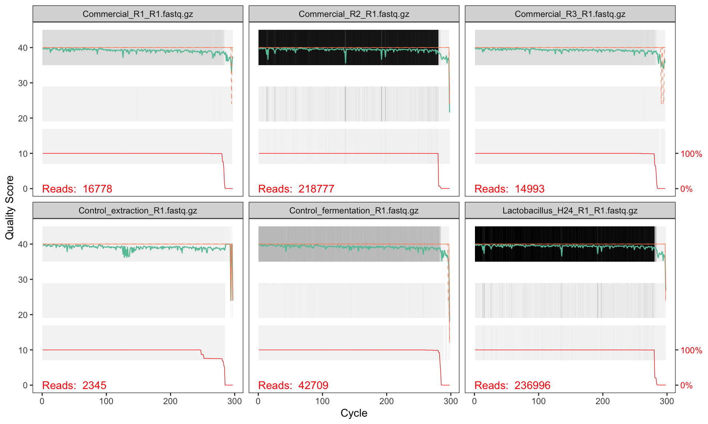
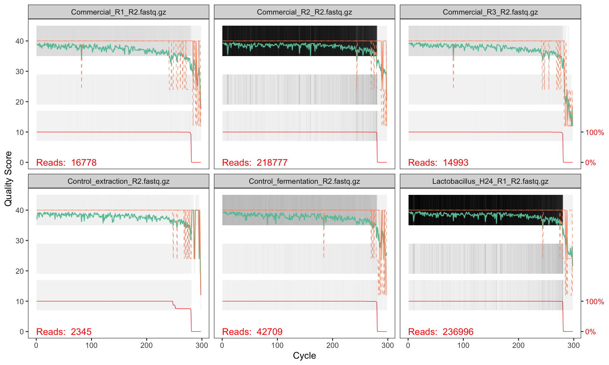

library(dada2) # Core DADA2 functions
library(tidyverse) # Data manipulation and ggplot2
library(phyloseq) # Microbiome data structures (used later)1 Setup and Quality Assessment
1.1 Load libraries
We start by loading the packages needed for the entire analysis. It is good practice to load all dependencies at the top of the script so that any missing package is caught immediately.
1.2 Configure paths
We define all file paths relative to this project’s working directory. Using relative paths makes the analysis portable — moving the project folder will not break the code.
# Directory containing the renamed, trimmed FASTQ files
# (reads are already primer-trimmed and renamed to clean sample names)
path_reads <- "../reads/"
# SILVA reference database for taxonomy assignment (used in Chapter 5)
path_silva <- "../db/silva_nr_v138_train_set.fa.gz"
# Directory for intermediate outputs
path_filtered <- "filtered"
path_precomp <- "precomputed"
dir.create(path_filtered, showWarnings = FALSE)
dir.create(path_precomp, showWarnings = FALSE)1.3 Removing primers
DADA2 works on raw reads but after primer removal. We used cutadapt to remove the primers.
- Primer forward:
CCTACGGGNGGCWGCAG - Primer reverse:
GGACTACHVGGGTATCTAATCC
The typical command to remove primers using cutadapt is:
cutadapt -a FWDPRIMER...RCREVPRIMER -A REVPRIMER...RCFWDPRIMER \
--discard-untrimmed -m 100:100 -j 8 \
-o sample1_noprimer_R1.fq.gz -p sample1_noprimer_R2.fq.gz \
sample1_R1.fq.gz sample1_R2.fq.gz-aand-Aprovide the primers to trim, not the three dots...to separate the pairs. The first is applied to the first pair, while the second in the second pair. We provide both primers to each end for the case when the amplicon is shorther than the read length (e.g. ITS sequencing)--discard-untrimmedmeans not to save reads where the primers were not detected at all-m X:Ymeans not to save reads shorter than X (in R1) and Y (in R2), by default we could end up with empty reads-o R1and-p R2will specify the output files-j INTis for multithreading (in the example 8 cores used)- the input are the positional arguments at the end (forward and reverse respectively)
1.4 Discover input files
DADA2 processes forward (R1) and reverse (R2) reads separately until the merging step. We find all FASTQ files matching each pattern and sort them to guarantee that the forward file at position i corresponds to the reverse file at position i.
fnFs <- sort(list.files(path_reads, pattern = "_R1.fastq.gz", full.names = TRUE))
fnRs <- sort(list.files(path_reads, pattern = "_R2.fastq.gz", full.names = TRUE))
cat("Forward read files found:", length(fnFs), "\n")Forward read files found: 29 cat("Reverse read files found:", length(fnRs), "\n")Reverse read files found: 29 1.4.1 Extract sample names
Sample names are extracted from the forward file names. Our files follow the naming convention <SampleID>_R1.fastq.gz, so we strip the _R1.fastq.gz suffix.
sample.names <- sub("_R1\\.fastq\\.gz$", "", basename(fnFs))
head(sample.names, 8)[1] "Commercial_R1" "Commercial_R2" "Commercial_R3"
[4] "Control_extraction" "Control_fermentation" "Lactobacillus_H24_R1"
[7] "Lactobacillus_H24_R2" "Lactobacillus_H24_R3"
TipFile naming matters
DADA2 assumes the forward and reverse file vectors are in the same order. Using sort() on both ensures correct pairing even when the filesystem returns files in an unexpected order.
1.5 Quality assessment
Before processing reads it is essential to visualise their quality profiles. This informs the truncation lengths we will use in the next chapter.
TipQuick preview online
you can check the quality profile using our utility website, without loading R at all.
1.5.1 Forward reads
plotQualityProfile(fnFs[1:6])
1.5.2 Reverse reads
plotQualityProfile(fnRs[1:6])
1.6 Interpreting quality profiles
Each panel shows one sample. The green line is the mean quality score at each position, the orange lines are the quartiles, and the red line (at the bottom) shows the proportion of reads that extend to that position.
What to look for:
- Drop in mean quality: reads typically degrade towards the 3′ end. Look for where the green line consistently falls below Q30.
- Reverse reads are usually worse than forward reads — this is normal for paired-end sequencing.
- Truncation point: you need to cut reads short enough to remove low-quality bases, but long enough so that the forward and reverse reads still overlap when merged.
Note that we also need to evaluate if we will be able to merge the two reads (if this is intended to happen). A typical V3-V4 amplicon is 460bp long, which means that 300bp paired end sequencing leaves a nice overlap to allow merging. If we need to trim a lot of bases so that their sum is going to be less than ~490bp, the overlap might not be sufficient.
1.6.1 Quality patterns in NextSeq 2000 data
This dataset was sequenced on an Illumina NextSeq 2000, which uses a 2-colour chemistry and reports binned (discrete) quality scores rather than the continuous Phred scores produced by older instruments like MiSeq. You will typically see quality scores clustering at a small number of levels (e.g. Q2, Q12, Q23, Q37) rather than spreading smoothly from 0 to 40.
This binning has an important consequence for DADA2’s error modelling step — we will address it in Chapter 3.
NoteChoosing truncation lengths
Based on these profiles, we will truncate:
- Forward reads at position 260 (quality remains high to this point)
- Reverse reads at position 250 (slightly shorter to remove end degradation)
After truncation, the overlap between the two reads is sufficient for merging the V3–V4 amplicon (~460 bp expected product; reads of 260 + 250 = 510 bp total gives ~50 bp overlap, which is adequate).